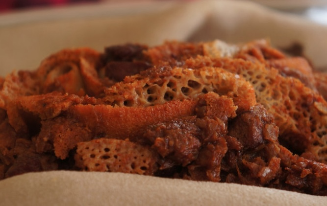
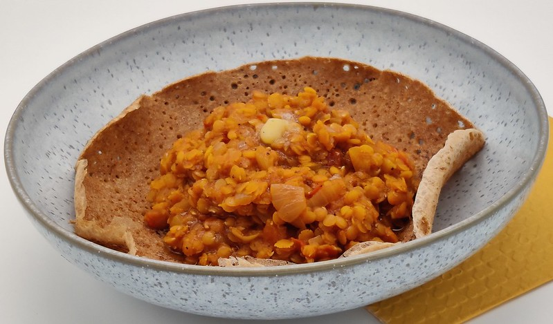

© Content licensed under CC BY 4.0 by Connie Yizhou Wang.
Doro Wat
A richly spiced, slow-cooked chicken stew, famous for its deep flavors and vibrant red color from berbere, a chili and spice blend. My favorite Ethiopian dish, it’s served with injera and often made for special gatherings, filling the table with warmth and celebration.

© Content licensed under CC BY 4.0 by stu_spivack.
Kitfo
A simple but flavorful dish made from finely minced raw or lightly cooked beef, seasoned with mitmita (a spiced chili powder) and niter kibbeh (spiced clarified butter). Often enjoyed with injera (a type of flatbread) and ayib (fresh cheese), Kitfo offers a unique, rich flavor that’s both spicy and buttery, making it a favorite for most.

© Content licensed under CC BY 4.0 by tesfayemengistu47.
Firfir
A hearty Ethiopian dish made by mixing pieces of torn injera (the traditional Ethiopian flatbread) with spiced clarified butter (niter kibbeh) and berbere, a flavorful chili spice blend. This comforting dish, often served for breakfast, is loved for its bold, tangy flavors and is typically enjoyed with a side of fresh yogurt or ayib (Ethiopian cheese) to balance the spices.

© Content licensed under CC BY 4.0 by Ein Nudelsieb bloggt ...
Misir Wat
A lentil stew known for its rich, comforting flavors and vibrant red color from berbere, a spiced chili blend. Made with red lentils simmered in a base of caramelized onions, garlic, and niter kibbeh (spiced clarified butter), this dish is both hearty and aromatic, with a mild heat that pairs perfectly with injera or rice. Misir Wat is a favorite in vegetarian Ethiopian cuisine.
Lastly, I just wanted to share this youtube video that gives a little more insight into my cultural food and the traditions in cooking and eating. Also the video includes a nice reccomendation for an Ethiopian restaurant here in Brooklyn, NY named Awash, where you can try their versions of the dishes listed above.